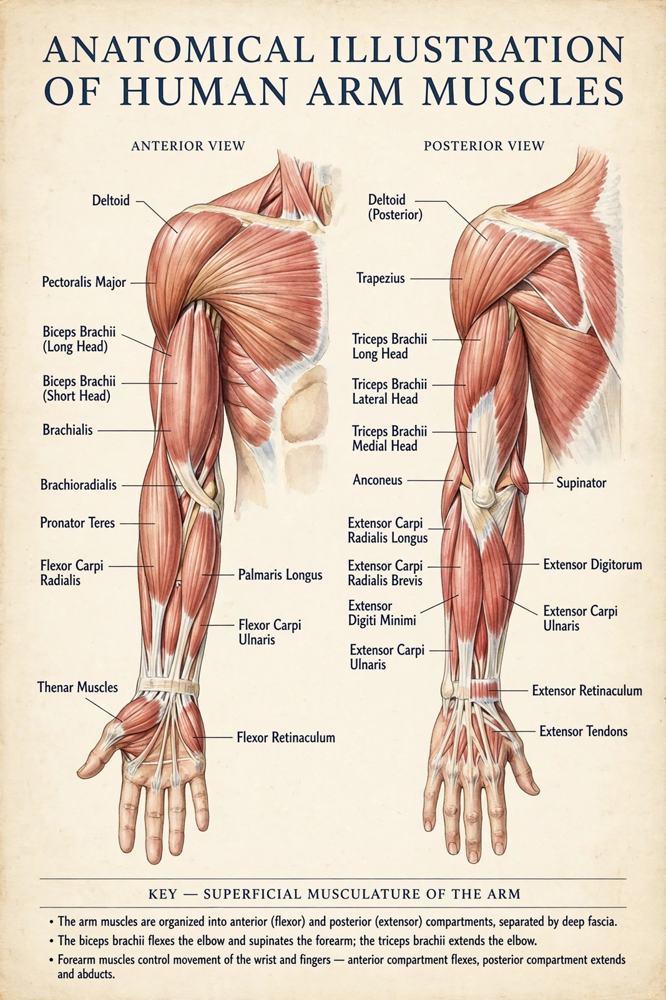

Arm
In human anatomy, the arm is the upper limb between the glenohumeral joint (shoulder) and the elbow joint. In common usage the term extends to the whole upper limb including the forearm and hand, but anatomically "arm" (brachium) refers only to the segment between shoulder and elbow, containing a single bone, the humerus.

| Bone | Humerus |
|---|---|
| Main muscles | Biceps brachii, triceps brachii, brachialis, coracobrachialis |
| Artery | Brachial artery |
| Nerves | Musculocutaneous, radial, median, ulnar |
| Joints | Shoulder (proximal), elbow (distal) |
Structure
The anterior compartment of the arm contains the biceps brachii, brachialis and coracobrachialis, which flex the elbow and are supplied by the musculocutaneous nerve. The posterior compartment contains the triceps brachii, the main extensor of the elbow, supplied by the radial nerve. The brachial artery runs down the arm and is the vessel palpated when measuring blood pressure with a cuff.
Function
Together with the shoulder girdle, the arm positions the hand in space, enabling reaching, lifting, throwing and manipulation. The elbow's hinge action and the shoulder's ball-and-socket mobility give the upper limb its wide range of motion.
Clinical significance
Fractures of the humeral shaft may injure the radial nerve, causing wrist drop. Procedures such as arthroscopy are commonly performed on the shoulder and elbow joints.
See also
Arthroscopy · Humerus · Forearm · Shoulder